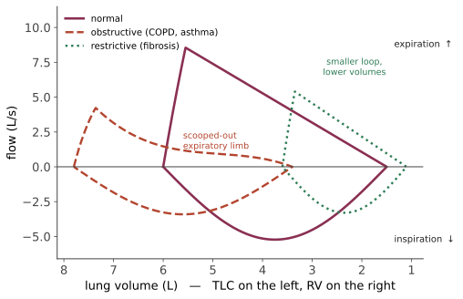

系统 II · 呼吸：阻塞、限制与换气衰竭
呼吸系统的病理可以用一个二分法组织完毕：送气出问题（通气）还是换气出问题（弥散/匹配）；而通气问题又分阻塞型（气出不去）与限制型（气进不来）。本页把这套分类与第 04 页的定量工具接起来。
1. 肺功能：阻塞 vs 限制

| 阻塞性 | 限制性 | |
|---|---|---|
| FEV₁/FVC | < 0.7（降低） | 正常或升高 |
| FVC | 正常或降低 | 降低 |
| TLC 肺总量 | 正常或增加（气体陷闭） | 降低（诊断标准） |
| 病 | COPD、哮喘、支气管扩张、闭塞性细支气管炎 | 实质性：肺纤维化、结节病、尘肺；胸廓外：肥胖、脊柱侧凸、神经肌肉病、胸腔积液 |
弥散能力 DLCO 用于进一步区分（回到 Fick 定律 \(J = DA\Delta P/d\)）：
- 肺气肿：肺泡壁破坏 → \(A\) ↓ → DLCO ↓；
- 哮喘：气道问题、肺泡完好 → DLCO 正常或略高；
- 肺纤维化：\(d\) ↑ + \(A\) ↓ → DLCO ↓↓；
- 胸廓外限制（肥胖、神经肌肉病）：肺实质正常 → DLCO 正常。
"限制性 + DLCO 正常 = 问题不在肺实质"——这是把物理公式变成鉴别工具的干净例子。
2. COPD：两个表型，一套机制
核心机制：吸入有害颗粒（吸烟为主，另有生物质燃料与职业暴露）→ 慢性炎症（中性粒细胞、巨噬细胞、CD8⁺ T，注意与哮喘的嗜酸性/Th2 炎症不同）→ 蛋白酶-抗蛋白酶失衡（中性粒细胞弹性蛋白酶破坏弹性纤维）+ 氧化应激 → 肺泡壁破坏与小气道纤维化。
α₁-抗胰蛋白酶缺乏是这条机制的天然实验：抗蛋白酶不足 → 早发（< 45 岁）、下叶为主的全小叶型肺气肿（吸烟性肺气肿是上叶为主的小叶中央型），并同时有肝病（异常蛋白在肝细胞内聚集，第 05 页）。
两个经典表型（现代认为是连续谱）："红喘型"（肺气肿为主）——消瘦、缩唇呼吸、DLCO 低；"紫肿型"（慢性支气管炎为主）——发绀、右心衰、CO₂ 潴留。
呼气流量受限的力学：正常呼气时气道被周围肺泡的径向牵引撑开；肺气肿破坏了这种支撑 → 用力呼气时胸内压压闭小气道 → 气体陷闭 → 肺过度充气 → 膈肌被压平、机械效率下降 → 呼吸功增加。缩唇呼吸的原理是提高气道内压、把等压点推向大气道，从而防止塌陷——患者自己发明的物理疗法。
动态过度充气是运动耐量下降的主因（呼气未完成即开始下一次吸气 → 逐次累积）——这解释了为何支气管扩张剂改善运动耐量的幅度远大于它对 FEV₁ 的改善。
慢性 II 型呼吸衰竭者的氧疗：过量给氧可加重 CO₂ 潴留，机制主要是解除低氧性肺血管收缩 → V/Q 失配加重与 Haldane 效应（氧合血红蛋白携 CO₂ 能力下降），"抑制低氧呼吸驱动"只是次要因素。正确做法是滴定目标 SpO₂ 88–92%，而不是不给氧——这条常被误传为"COPD 病人不能吸氧"。
3. 哮喘
机制：Th2/2 型炎症（IL-4、IL-5、IL-13）+ IgE + 肥大细胞 + 嗜酸粒细胞 → 气道高反应性 + 可逆性阻塞 + 黏液高分泌 + 气道重塑。
与 COPD 的三点关键差别：可逆性（支气管扩张剂后 FEV₁ 改善 ≥12% 且 ≥200 mL）、炎症细胞类型（嗜酸 vs 中性）、对糖皮质激素的反应（哮喘好、COPD 有限）。这决定了治疗核心：哮喘的基石是吸入糖皮质激素，COPD 的基石是支气管扩张剂。
急性重症哮喘的一个致命陷阱：血气中 PaCO₂"正常"是危险信号而非好转——发作时患者过度通气应使 PaCO₂ 降低，CO₂ 回升意味着呼吸肌疲劳、即将失代偿。这是从第 04 页的通气生理直接推出的判断，也是急诊最重要的单条呼吸系统警示。
表型医学的进展：嗜酸粒细胞型可用抗 IL-5（美泊利单抗）、抗 IL-4Rα（度普利尤单抗）、抗 IgE（奥马珠单抗）；这是按机制而非按严重度选药的一个成功例子（第 09 页的 Th2 通路表）。
4. 间质性肺病与肺纤维化
共同表现：限制性通气 + DLCO 下降 + 弥漫性影像异常 + 干咳与劳力性呼吸困难 + 爆裂音（Velcro 音）。
分类思路：已知病因（尘肺——石棉致下叶纤维化与胸膜斑、间皮瘤；矽肺——上叶结节、增加结核风险；过敏性肺炎；药物——胺碘酮、博来霉素、甲氨蝶呤；放射；结缔组织病相关）与特发性（特发性肺纤维化 IPF 最重要）。
IPF 的机制范式转变值得一提：从"慢性炎症导致纤维化"转向"反复的肺泡上皮微损伤 + 异常修复"——这一转变有直接治疗后果：免疫抑制剂（泼尼松 + 硫唑嘌呤 + N-乙酰半胱氨酸）在 PANTHER-IPF 试验中增加死亡率而被叫停，而抗纤维化药（吡非尼酮、尼达尼布）减缓 FVC 下降速率。"机制理解错了，治疗就会有害"的一个昂贵教训。
5. 肺循环疾病
肺栓塞（病理生理见第 07 页）。要点补充：低氧性肺血管收缩是肺循环独有的特性（体循环缺氧时血管扩张，肺循环相反）——目的是把血流从通气差的区域引开以优化 V/Q；但全肺缺氧（如高原）则导致全肺血管收缩 → 肺动脉高压。
肺动脉高压（mPAP > 20 mmHg）五分类：① 动脉型 PAH（特发性、遗传 BMPR2、结缔组织病、药物）；② 左心疾病所致（最常见）；③ 肺病/低氧所致；④ 慢性血栓栓塞性；⑤ 多因素。只有第 ① 类适用靶向药（内皮素受体拮抗剂、PDE5 抑制剂、前列环素类）——用错分类会造成伤害（如给左心疾病者用扩血管药可致肺水肿）。
6. 感染与急性损伤
肺炎的解剖分型：大叶性（肺链，实变累及整叶）、小叶性/支气管肺炎（斑片状，多病原）、间质性/非典型（支原体、病毒；影像重于体征）。
院内 vs 社区获得的意义在于病原谱与耐药性不同，从而决定经验性用药——🔗 姊妹站第 11、13 页给出严重度评分与抗生素选择的证据。
ARDS（急性呼吸窘迫综合征）：弥漫性肺泡损伤——渗出期（透明膜形成，富蛋白水肿液，第 07 页的通透性型水肿）→ 增生期 → 纤维化期。特征：急性起病、双肺浸润、非心源性、顽固性低氧（大量分流 → 吸氧反应差，第 04 页）、顺应性显著下降。
ARDS 的治疗是"减少医源性损伤"的典范：小潮气量通气（6 mL/kg 理想体重）降低死亡率（ARDSNet 试验）——因为大潮气量造成呼吸机相关肺损伤（容积伤、气压伤、萎陷伤、生物伤）。俯卧位通气在重度 ARDS 中亦降低死亡率（改善 V/Q 匹配与减少背侧压迫）。这是本站少数"治疗即是不做某事"的例子。
7. 肺癌与胸膜疾病（要点）
肺癌两大类（分类直接决定治疗）：
| 小细胞肺癌 SCLC | 非小细胞肺癌 NSCLC | |
|---|---|---|
| 占比 | 约 15% | 约 85% |
| 与吸烟 | 强相关 | 腺癌与吸烟关系相对弱 |
| 位置 | 中央型 | 腺癌周围型、鳞癌中央型 |
| 生物学 | 倍增快、早期转移 | 较慢 |
| 治疗 | 化疗/放疗为主（手术罕见） | 可手术；分子分型指导靶向（EGFR、ALK、ROS1、KRAS G12C、PD-L1） |
| 副肿瘤 | SIADH、异位 ACTH、Lambert–Eaton | 鳞癌 PTHrP → 高钙 |
筛查：低剂量 CT 在高危吸烟人群中降低肺癌死亡率（NLST、NELSON），但假阳性与过度诊断代价可观——🔗 姊妹站第 17 页给出 NNS 与危害的完整账。
胸腔积液用 Light 标准区分渗出/漏出（第 06 页）；气胸分原发自发性（瘦高青年男性、肺尖胸膜下大疱）、继发性（COPD）、张力性（急症：纵隔移位、静脉回流受阻 → 梗阻性休克，需立即减压）。
睡眠呼吸暂停：上气道反复塌陷 → 间歇低氧 + 觉醒 → 交感激活 → 高血压（尤其难治性）、房颤、代谢紊乱。它是"可治疗的继发性高血压"中最常被漏诊的一个（第 17 页）。
参考与更新
- 最后审查：2026-08-02。 本节来源用于核验 COPD、哮喘、间质性肺病、肺高压、肺炎/ARDS 与睡眠呼吸暂停的疾病框架；治疗阶梯、适应证和药物选择以当地最新版指南为准。
- GOLD 2026 Report — GOLD，2026：COPD 诊断、分层和管理。
- GINA Reports — GINA：哮喘全球策略报告及年度更新入口。
- ATS/ERS/JRS/ALAT Clinical Practice Guideline for IPF — ATS/ERS/JRS/ALAT，2022：特发性肺纤维化诊断与管理。
- ATS/ESICM/SCCM Clinical Practice Guideline for ARDS — ATS/ESICM/SCCM，2017：ARDS 机械通气与支持治疗。
下一页：肾脏、水电解质与酸碱——把第 03、04 页的定量工具用到底。